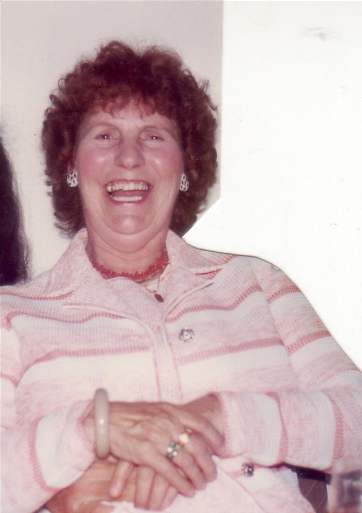
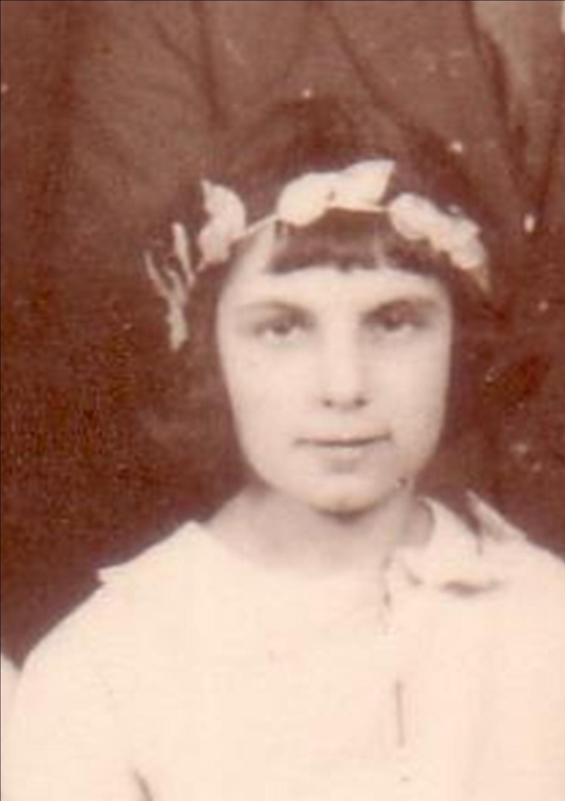
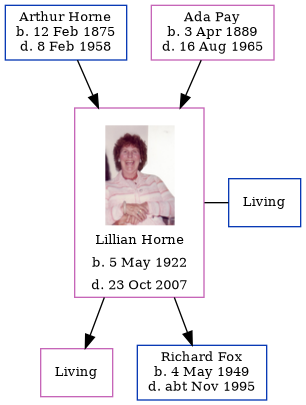

Lillian Violet Fox (née Horne) 1922 - 2007
[ Home ] | [ Calendar ] | [ Surnames Index ] | [ Family History ]The daughter of Arthur Horne (a smack owner's assistant) and Ada Pay, Lillian Horne, the second cousin twice-removed on the father's side of Nigel Horne, was born in Thanet, Kent, England on May 5, 19221,2 and married Raymond Fox (with whom she had 2 children: Angela J and Richard Arthur, along with 1 surviving child) in Thanet around Feb 19463. On Mar 6, 1926, she lived on 12 King Edward Road, Ramsgate, Kent, England.
She died on Oct 23, 2007 in Ramsgate2.
Parents
- Arthur Albert was born on Feb 12, 1875
- Ada Caroline Eleanor was born on Apr 3, 1889
Children
- Richard Arthur was born on May 4, 1949
Citations
- England & Wales births 1837-2006 - Findmypast
- United Kingdom Deaths 2007-2017 - Findmypast
- England & Wales Marriages 1837-2005 - Findmypast
Media
Lillian Horne

Lillian Horne - 2

England & Wales births 1837-2006 - BMD/B/1922/2/AZ/000684/150
England & Wales marriages 1837-2005 - BMD/M/1946/1/AZ/000559/079
United Kingdom Deaths 2007-2017 - BMD/D/MILLEN/001595406
Family Tree
Generated by Ged2Site. Last updated on Jul 20, 2025